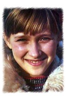

Elena Davydova (USSR)
1980 Olympic AA Champion
|

Medal Total
- Olympic Games: 2 Gold, 1
Silver
- World Championships: 1
Gold, 1 Silver, 1 Bronze
|
Elena was born on August 7, 1961, in Voronezh.
She was coached by Gennady Korshunov, first at Spartak Voronezh and later at Spartak Leningrad. The USSR team
alternate at the 1978 World Championships, Davydova found the right combination
of originality, complexity and consistency, and made her country's Olympic team
in 1980. She won team gold and then took the AA gold after a tough battle
with Nadia Comaneci and Maxi
Gnauck.
Elena was the first female to perform a Tkachev on UB and was the
first female to perform an Arabian 1 3/4 on FX. In addition, she vaulted a
full on, full off (first performed by Olga Korbut
at the 1974 World Championships). Davydova's last major competition was
the 1981 World Championships, where she finished 3rd AA.
She married
former boxer Pavel Filatov and immigrated to Canada in 1991 with her
family. Currently, she coaches at Gemini
Gymnastics in Oshawa, Canada.
Competition Results
- 1973
RSFSR-BUL Dual Meet: 1st Team, 1st AA
1974
All-Union Best Elements Competition: 1st UB
All-Union Specialized Sports Schools Championships: 1st AA (Candidate for Master)
1975
Jr. CSSR-USSR Dual Meet: 1st Team, 6th AA
Jr. USSR Championships: 1st Team, 3rd AA, 1st V,
1st UB
1976
- American Cup: 3rd AA
- Antibes International: 1st AA, 1st V, 2nd UB, 2nd B, 2nd FX
- Chunichi Cup: 3rd AA
- Riga International: 2nd AA, 1st V, 1st
UB, 1st B, 3rd FX
- Tokyo Cup: 1st V, 3rd FX
USSR-CSSR Dual Meet: 1st Team, 2nd V
- USSR Championships: 2nd AA, 3rd V, 5th UB
- USSR Cup: 7th AA
-
- 1977
- Champions All: 4th AA
USSR Championships: 1st UB
-
- 1978
- Chunichi Cup: 1st AA
- Spartakiade of RSFSR Sports Schools: 3rd Team, 2nd
AA, 1st V, 1st UB
USSR Championships: 17th AA, 3rd UB
-
- 1979
- Coca Cola International: 4th AA, 1st FX, 3rd V,
4th UB,
4th B
- Moscow News: 3rd AA, 2nd V, 2nd UB
- Simo Sappinen Memorial: 2nd AA
- USSR Championships: 8th AA, 4th V, 6th
FX
-
- 1980
- Moscow News: 2nd AA, 1st FX, 2nd V, 2nd B
- Olympic Games: 1st Team, 1st
AA, 2nd B,
4th V
- USSR Championships: 3rd AA, 1st V, 6th
UB
- USSR Cup: 1st AA
-
- 1981
- USSR Championships: 1st AA, 1st V, 1st
FX, 3rd UB
- World Championships: 1st Team,
3rd AA, 2nd FX,
4th V, 7th B
- This page was created on January 17, 1999 and was last
updated on August 17, 2026.
© Gymn Forum